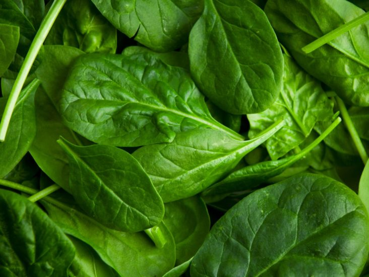

DYSENTRY

Treatments
-
SPINACH
Eliminate heat (anti pyretic), urinary laxative (diuretic), remove toxins (anti-toxin) relieve swelling, stop diarrhea and cleanse the blood.
- Treatment :Fresh root 30gr washed clean, plus 15 grams of palm sugar and clean water to taste then boiled until the remaining 1 cup, drink before eating.
POMEGRANATE WHITE
Fresh white pomegranate leaves 5 g; Gingering rhizome 2 g; 6 g of fresh guava leaves; 110 ml water, made by infusion, drunk once a day 100 ml; repeated for 7 days.ALPOCATES
5 g of fresh avocado leaves; 5 g of fresh ginger root rhizome; 6 g of fresh turmeric rhizome; Soak air 1/2 g; Fresh gotu kola leaves 6 g; 115 ml water, made by infusion or brewed, drunk once a day 100 ml.- Stop the sputum To cure diarrhea, take curry leaves and mix it with powdered ghee and eat it.